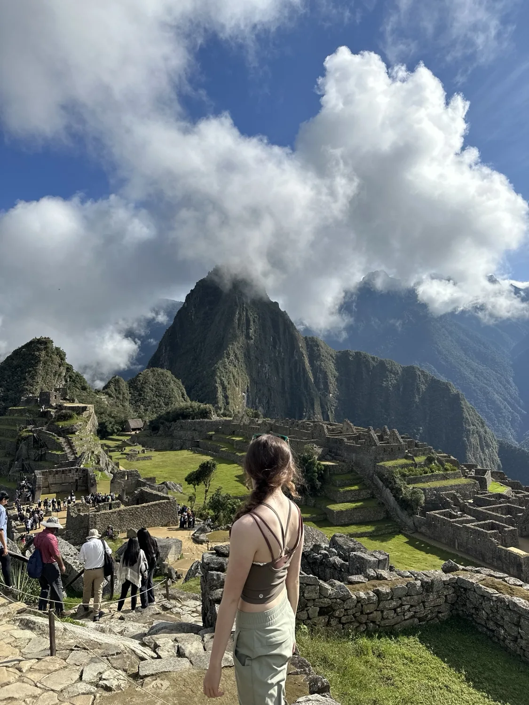
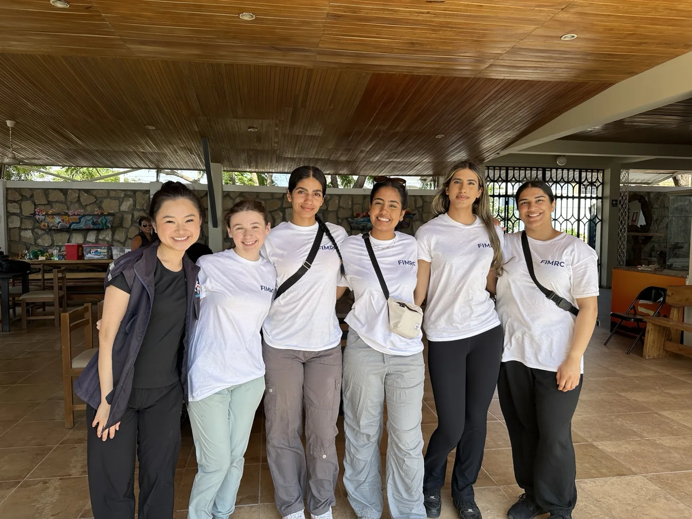
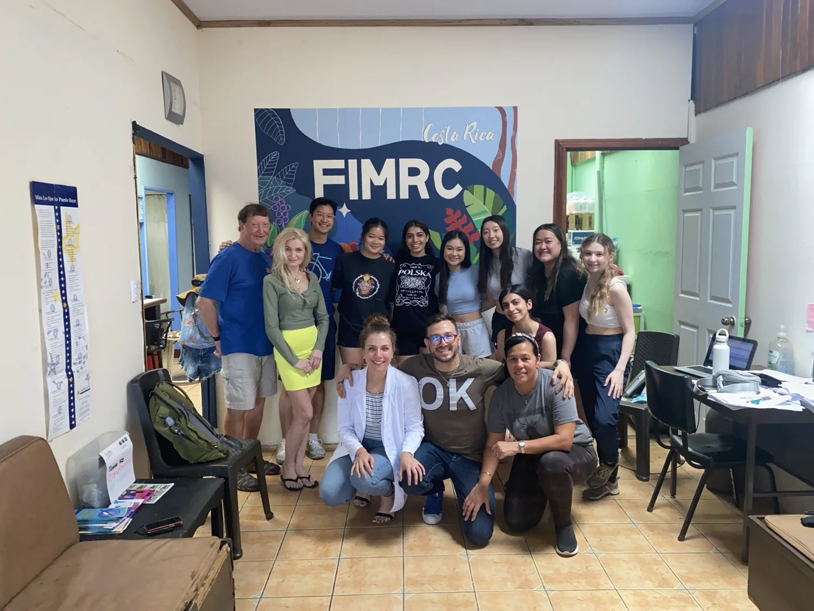
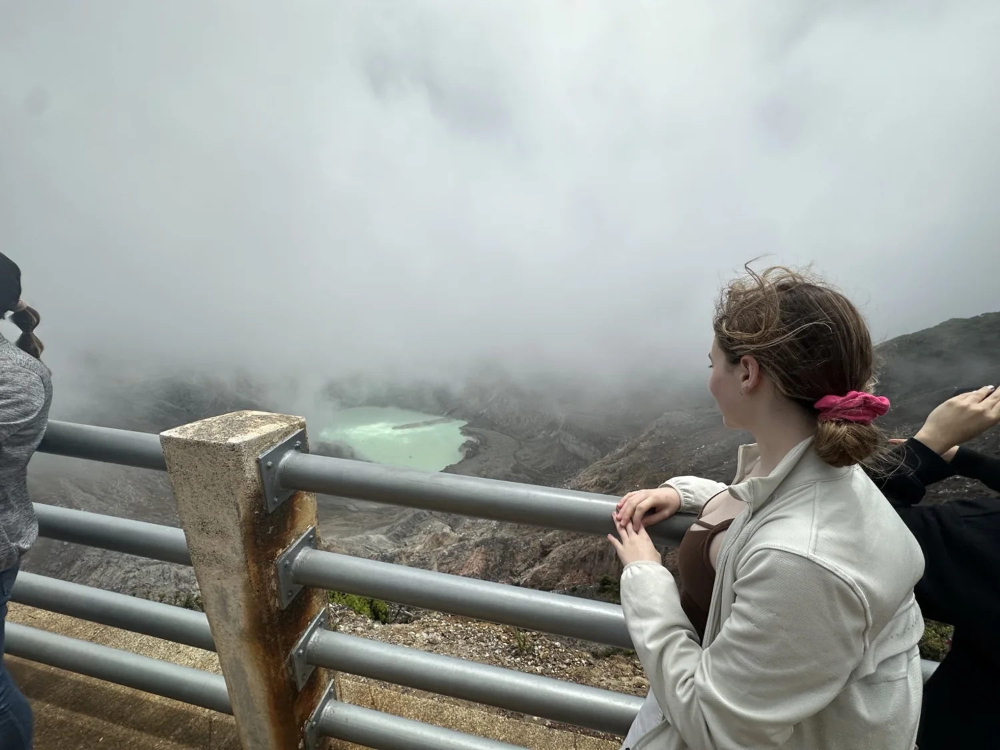
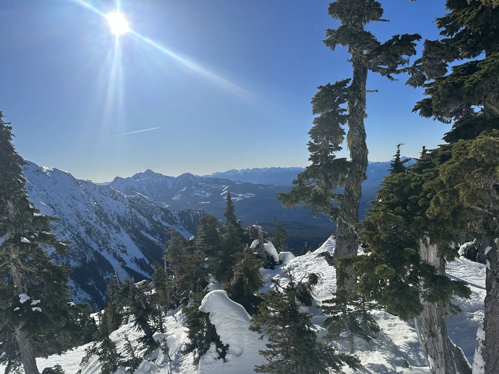

Mechanical design
CAD, structural and thermal simulation, design for manufacture, and fabrication.
I build, test, and refine physical systems at the intersection of mechanical engineering and electronics.
I'm a UBC Mechanical Engineering student specializing in Mechatronics (B.A.Sc., expected May 2028). I focus on designing physical hardware, integrating sensors and electronics, then validating what I build through simulation and instrumented tests.
I grew up in Alert Bay on northern Vancouver Island and spent years working in my family's pharmacy. That experience made me interested in how practical medical technology reaches people; I began exploring biomedical mechatronics through a wearable automated naloxone-injector proof of concept.
My engineering experience includes fixed-wing UAV instrumentation and testing at AirMetal, precision tooling and product reliability at NETGEAR R&D, and mechanical leadership for UBC Thunderbikes. The motorcycle team earned first place at the 2024 Motofest of Monterrey; I'm now leading mechanical development toward MotoStudent Spain 2027. My long-term interest is in robotics hardware and precision medical devices, where mechanical design, embedded control, and experimental evidence need to work together.
EXPLORE MY PROJECTS ↗CAD, structural and thermal simulation, design for manufacture, and fabrication.
Microcontrollers, sensors, actuators, telemetry, and control systems.
Test rigs, instrumentation, data analysis, and iterative prototype development.
I am pursuing a B.A.Sc. in Mechanical Engineering (Mechatronics option) at the University of British Columbia, with a minor in Entrepreneurship (expected May 2028). My goal is to develop robotics and medical-device hardware: mechanisms, sensors, actuators and instruments that work reliably outside a CAD model.
Across two engineering co-ops and a student racing team, I have worked through the full build–test–iterate cycle: modelling in Creo and SolidWorks, FEA/CFD in ANSYS, developing microcontroller-based measurement systems, fabricating components and fixtures, collecting sensor data, and translating test findings into design changes.
Growing up in Alert Bay on northern Vancouver Island and working in my family’s pharmacy gave me an early appreciation for practical healthcare. I later built a wearable automated naloxone-injector proof of concept that combined pulse-oximetry sensing, Arduino control, actuator sequencing and a 3D-printed enclosure. That work shaped my interest in medical robotics, prosthetics and precision surgical instruments—especially the physical hardware that connects engineering design with patient needs.
Outside the workshop, I am a Red Cross-certified First Responder and first-aid/CPR instructor. I have volunteered in healthcare outreach abroad, including experiences in Costa Rica (2023), Ecuador (2024) and Peru (2025). Travelling and working alongside different communities has strengthened my interest in accessible, reliable medical technology.
I enjoy taking a concept through the full engineering cycle: defining interfaces and constraints, building a functional prototype, instrumenting tests, diagnosing failures and iterating the design. Outside engineering, I also enjoy travel, volunteering, woodworking and hands-on fabrication.
Beyond engineering, I love travelling, learning from different communities, and spending time outdoors. I’ve volunteered in healthcare outreach through FIMRC in Costa Rica, Ecuador and Peru, and I’m a Red Cross-certified First Responder and first-aid/CPR instructor. Those experiences reinforce why I’m interested in building practical, accessible medical technology.

I enjoy exploring new places and taking on physical challenges, whether that’s hiking, camping, skiing, or training for a running event. I recently completed my first 5K.
Volunteering internationally has also been a meaningful part of my life. Through FIMRC, I’ve been able to travel, meet people from different backgrounds, and contribute to community-focused healthcare initiatives. It keeps the human side of engineering in perspective.



